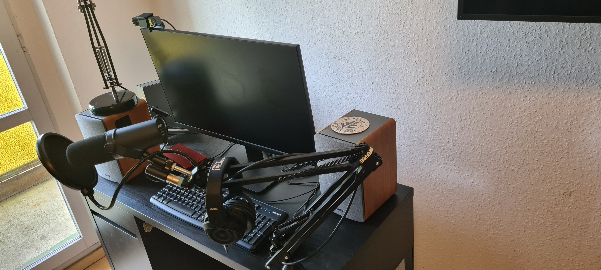

.jpg)
Basso profondo (Italian: "deep bass"), sometimes basso profundo or contrabass, is the bass voice subtype with the lowest vocal range. It is the deepest tone of the human voice and is also a tone that very few men have, so consequently it attracts a lot of attention from consumers because it is so different, your commercial spot will not be the same as before with this voice.
Equipment
The best equipment to deliver the best material: The Shure SM7B is a professional cardiode microphone that is very popular among the world's largest podcast and radio broadcasters, because it's audio quality is unique, so there is no need to use any effects or editing, with the exception that it fits perfectly with lower tones of voices.
About Me
My name is Thomas Richter, i am a vocal artist and i stand out for having the lowest tone of the human voice, i speak Portuguese, English, German and Spanish so i can advertise your product or your brand in several languages, here on my page you will find some of my portfolio materials where you can check the works already done by me.
Portfolio
contact
Thomas Mayer Richter